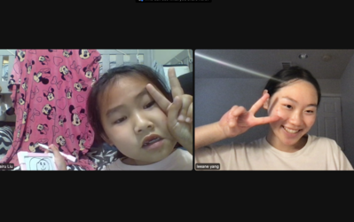
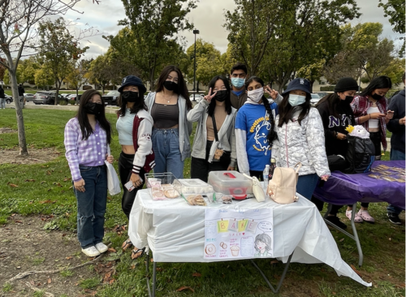
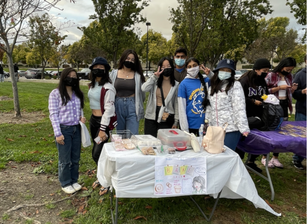
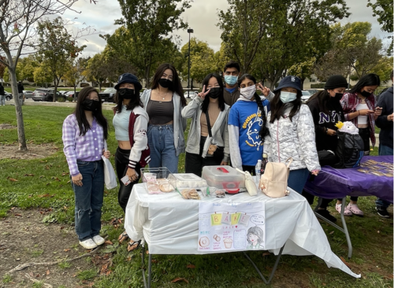

Leeane Yang
Leeane Yang is a current Pre-Business major, on the path of going into Business Administration. She is a DECA alumni who placed second in the Entrepreneurship Start-Up Business Plan (regional) and won third place in the Virtual Business Pitch Challenge. She has no current work experience as she’s trying to focus on school and make money the nontraditional way.
A little about her creative side: since she was around 4 or 5 years old, she has always loved to express her creativity through drawing. Her favorite childhood toy was a flower-decorated drawing board which she would fight over with my siblings because she used it so often. Throughout her educational years, she was always in charge of the visual aesthetics of group projects and would enjoy that job more than anything. From the very beginning, she had always found it fascinating how a picture could be created through the use of a pencil. It was always through the matter of perception and the eye when it came to creating a picture.
The act of drawing was therapeutic to her; It gave her peace, pleasure, and allowed her to slow down to appreciate the present moment in our fast-paced society. It taught her how to: focus, look for details, see different perspectives and angles, and put into words the feeling of each image, onto a piece of paper.
One core value she has is her passion for looking her best and feeling the best. This ever-lasting journey has been one of frustration and happiness. Ultimately though, she is proud to be where she is right now but is continuously trying to better herself in all aspects of her life. What she would regret most is not living her life to what her full potential could be and having to go through life not being able to experience the sweetness that life has to offer.
As social media grew and grew, she searched for other methods to gain income through the nontraditional path. Currently, three methods have stood out to her: digital marketing, influencer, and user-generated content (UGC). Finding them appealing, she conducted research about them and has even read books on marketing to extend her knowledge in that field. More importantly, to get into the right mindset, the book, The 7 Habits of Highly Effective People, by Stephen Covey, left a great impression on her and impacted her way of thinking about productivity and self-improvement.
Experience
Dublin Deca
• Won second place in the Start-Up Business sector (regional)
• Recieved Third Place in Minicon Roleplay
• Placed third in the Vitual Busiiness Pitch Challenge
Tutoring
• Tutored kids in English
• Recieved the Presidential Award for Volunteering
• Created educational content to help promote student education
Education
UC Riverside
Portfolio



 

